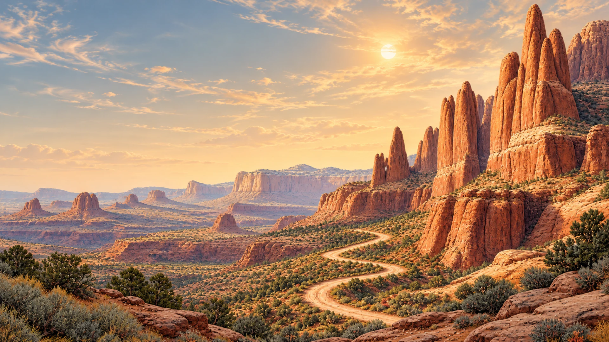

This index needs JavaScript. Every video is also on After Skool's YouTube channel.
A fan-made index, not affiliated with After Skool. Every drawing is Mark Wooding's. Watch on YouTube · Support Mark on Patreon · For Mark